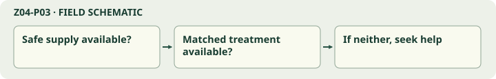

Z04-P03 · Water
When you cannot treat water
Recognize when a water-treatment fallback is unavailable.
When it applies · Outdoor delay without a reliable heat source, safe vessel or validated product.
Equipment · Known-safe carried water if available. Communication and shelter equipment as conditions allow.

Actions
- Check for carried safe water or an accessible official source before collecting untreated water. Keep route safety in the choice.[W09, E01, ED]
- If a known method is available, check what it is designed to remove. Cloth straining and clear appearance do not address microbial risks.[W04, W08, W09]
- If no dependable method exists, communicate your location and need. Avoid creating another emergency by travelling an unsafe route to find water.[T06, ED]
Verify · Name the supply and the treatment steps you can actually perform before treating a collected source as drinking water.[W04, W09, ED]
Stop or change course · Suspected toxic contamination requires an alternate source even if you can boil or disinfect.[W01]
Evidence and editorial notes
- E01 · Minnesota DNR · Safety in State Forests
- Before your trip and while visiting · state-forest travel
Know the route, check conditions, carry navigation and safety equipment and share trip details.
Primary source · checked 2026-11-24 - T06 · NPS · Outdoor Emergency Plan
- If you get lost or hurt; call for help · Outdoor US emergency
Communicate location, last known point, situation and needs. Stay put when unable to establish a safe route unless immediate danger requires movement.
Primary source · checked 2026-11-24 - W01 · CDC · How to Make Water Safe in an Emergency
- Water with fuel or toxic chemicals in it · Suspected fuel, toxic chemicals or radioactive contamination
Use a different safe supply. Standard boiling and microbial disinfection do not make this water safe.
Primary source · checked 2026-11-24 - W04 · CDC · Water Treatment Options When Hiking, Camping, or Traveling
- Water treatment methods > Filter and disinfect · Untreated backcountry water; suitable devices and directions
Filter capability varies. Filtering then disinfecting addresses gaps left by typical portable filters. Follow both manufacturers' directions.
Primary source · checked 2026-11-24 - W08 · CDC · How to Make Water Safe in an Emergency
- Boil > Steps for boiling water > cloudy water · Cloudy water with no identified chemical hazard
Settling or cloth clarification only prepares water for treatment. Do not count it as disinfection.
Primary source · checked 2026-11-24 - W09 · CDC · Water Treatment Options When Hiking, Camping, or Traveling
- Overview and water treatment methods · Hiking or camping where no safe source is confirmed
Even clear water can contain germs. Assess the supply and carry safe water or an appropriate treatment method.
Primary source · checked 2026-11-24
Source lineage · B012-P23.